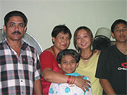
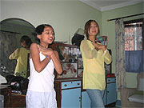
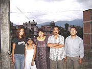
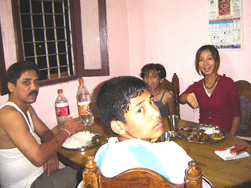

 本当の家族みたいに温かい！ |
サリーを着ました☆ |

「今回は、初めてのホームステイ体験だったので、現地に行くまでは実際にどんな家族なんだろうと少し心配でしたが、ネパールに着いてからはその心配はまったくなくなりました。
現地のアルチャナさんはカトマンズの空港に着いてからすぐに目の付くところで私の名前の書かれたプラカードを持って待っていてくださり、笑顔で迎えてくれとても安心しました。日本語がとても上手で、言葉や意思疎通がスムーズにとれまた、親切に分からないことなどを教えてくださいました。
この留学プログラムは、ホームステイができることと英語のレッスンが受けられるということで参加を決めました。
英語のレッスンでは、私の勉強したいことにポイントをあわせて丁寧にゆっくりと時間をかけて教えてくださりました。
今までおろそかにしていた英語の基礎、グラマーをしっかり学べたと思います。宿題も多すぎずできる範囲に絞ってくれました。先生はその他、観光地に案内して下さったり、とても親切でした。本当に感謝しています。
ネパールでの滞在は今回が初めてで、ホームステイ自体も初めての経験だったので最初は緊張していましたが、家族のみなさんがとても親切にしてくださいました。
日本人の私の健康をみなさんが気遣ってくれ、お陰で元気に過ごせました。
ホストファミリーと過ごした時間は私にとってこの旅の最大かつ、最高の思い出です。
家族全員英語が上手でコミュニケーションがスムーズでした。私が分からない言葉も丁寧に教えてくれましたし、ネパールの文化に興味がある私にいろんな文化を紹介してくれました。
| 空いている時間は子供達と遊んだり、ネパールのダンスを教えてもらったり、私も日本の音楽を教えたり、毎日のお母さんのおいしいネパール料理を楽しく頂いていました。 右手で食べるのも最初はどうやるのか分からなかったのですが「こうするんだよ」と教えてくれて、すぐに慣れましたし、手で食べるとおいしいなと思いました。 水もボイルウォーターを毎日用意してくださり、何不自由なく生活できました。 |
 ネパールダンス♪ |
それに行きたかった観光地にも連れて行ってくれました。
みんなオープンに接してくれたので私もすぐに打ち解けられました。
まるで本当の家族のように温かくて、帰国した今でも家族と過ごした楽しい日々が頭から離れません。
それからもっと、英語を勉強していけばよかったと思います。子供から大人まで、ネパール人は英語が上手く話せるので、私がもっといろんな単語を知っていれば気持ちを上手く伝えられたと思います。
ネパールに行く前に、マスクが必要だと聞いていたのですが、つい忘れてしまいました。それで、現地について車の量が大変多くて砂埃がすごかったのでやっぱりマスクは必要だったなと思いました。
持って行って良かったものはウエットティッシュ。町を歩いたり、店の商品を触った後、外での食事に役に立ちました。
それ以外は現地でなんでも手に入るので問題はありませんでした。
携帯電話、パソコンがあって当たり前の日本社会ですが、ここにはまだほんのわずかな人しか買うことができないのが現実です。日本製品はどれも高くてここの人達には到底買うことができません。それだけ日本製が優れていると評価されているからなのでしょう。
物が古くなっても何度も直したりしてずっと大切に使い続けているネパール人を見て、ハッとしました。
私はなんでもすぐに壊れたり、汚れたりしたらすぐに新しい物を買っていました。
それだけ満たされた国に住んでいたということが分かったからです。
持っていないものを簡単に求めることのできる物質的に満たされた日本人の私がネパールの人達に教えられたことは、自分の持っている全てを楽しめることこそが人生の素晴らしさだということです。
 |
日本人は必ずしもその点において幸せとはいえないかもしれません。 その証拠にネパール人は私達日本人よりもずっと笑顔の数が多いと感じたからです。 ネパールの女性はみんなきれいに着飾り、見ていてとても美しいです。 人も店も多く、カトマンズは都会なイメージでした。 |
機会があればぜひまたネパールへ行きたいです。
こんなにネパールでの生活が充実したものになるとは思っていませんでした。
食事はとてもおいしかったし、体調を崩すことなく元気で過ごせました。
いままでヨーロッパにばかり旅行に行っていましたが、今回のネパールの旅で新たな旅の素晴らしさを発見しました。それもみんなBeインターナショナルプログラムのお陰です。このプログラムを見つけられて本当にラッキーだったと思います。Beインターナショナルの担当逢坂さんには行く前から、ちょっとした質問や、分からないことなど何度も電話しているのにいつもやさしく対応してくださって感謝しています。
今回は2週間という短い滞在でしたが、この国をもっと知るにはさらに時間をかけて住んでみる必要があると思います。
行く前に思い描いていたネパール人の印象よりも、みんな親切で人に対して尊敬心を持って応対するネパール人を私は見習わなくてはと思います。ぜひプログラムをもっと多くの日本人に知って欲しいと思いました。
そして、異文化に触れ、本当の意味で人生の何が大切なのかを知って欲しいです。 」
 ホストファミリーと観光 |
 皆と一緒に夕食 |